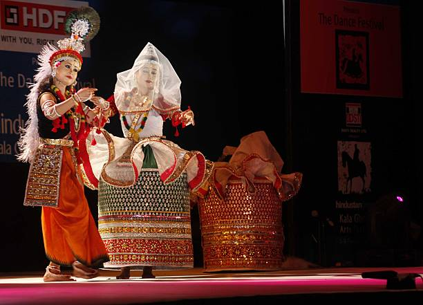

ManipuriThe Graceful Dance of Manipur |
|  |
About Manipuri:Manipuri is a classical dance form from Manipur, India, characterized by its gentle and flowing movements. This dance often depicts themes from Vaishnavism and narrates stories of Radha and Krishna, making it deeply spiritual and devotional. |